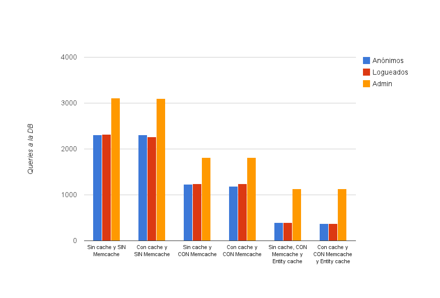

Mejorando el rendimiento en Drupal 7: Memcached y Entity cache
En este post vamos a enfocarnos sobre Memcached tratando de mostrar las ventajas a la hora de utilizarlo en Drupal 7.
Memcached para los que no lo conozcan, es un data cache basado en RAM.
Usar Memcached en Drupal tiene un beneficio altísimo tanto para usuarios logueados como para anónimos. ¿Por que?, fácil, Drupal para cachear utiliza la base de datos como almacén para dicho cache, y esto es costoso. Cada vez que guarda algo en cache o lo pide, estamos haciendo una query a la DB, y aunque toda tu DB este cacheada (mysql tiene su propio cache) Drupal siempre va a tener un importante overhead solo por tener que pedir a la DB este cache.
Técnicamente hablando el tema es así: Estés o no logueado, Drupal usa cache_get() y cache_set(). Luego, estas funciones delegan la tarea de cacheo a la clase que se encargue en ese momento de almacenar y devolver los datos cacheados. Una instalación estándar trae una clase llamada “DrupalDatabaseCache” que usa como backend storage la propia DB de Drupal. El módulo Memcache API simplemente proporciona su propia clase (MemCacheDrupal) que hace lo mismo pero mandando el cache a Memcache.
Memcache se presenta como una muy buena solución a este escollo ya que fue diseñado para ser usado como cache, ofreciendo un overhead mínimo y una velocidad de respuesta muy superior.
Bueno, vamos al lío.
Maquina de pruebas:
- Hardware:
- core2duo e7400@3.5GHZ
- 8gb de ram DDR3@1333MHZ
- Disco SSD OCZ Vertex 2 de 60gb
- Software:
- Ubuntu 12.10 de 64 bits
- PHP 5.4.6
- MySQL 5.5.29
- Apache 2.2.22
- APC 3.1.13
- memcached 1.4.14
- Cliente PHP de Memcache: memcached 2.0.1
- Modulo Memcache API and Integration 7.x-1.0
- Modulo Entity cache
Para hacer las pruebas he usado la instalación de Drupal “Un mal día para este Drupal“.
Las pruebas las hice sobre usuarios anónimos, logueados y el propio admin que es el que mas suele sufrir en terminos de performance porque ejecuta código extra por los privilegios que conlleva.
Usuarios anónimos:
Pruebas con el cache de Drupal desactivado:
Sin Memcache
- Executed 2312 queries in 199.42 ms.
- Page execution time was 4791.87 ms.
- PHP peak=59.25 MB.
Con Memcache
- Executed 1226 queries in 71.77 ms.
- Page execution time was 3892.39 ms.
- PHP peak=57 MB.
Con Memcache y entity cache:
- Executed 398 queries in 39.88 ms.
- Page execution time was 3450.76 ms.
- PHP peak=56 MB.
Ahora con el cache de Drupal y bloques activado:
Sin Memcache
- Executed 2312 queries in 167.15 ms.
- Page execution time was 4037.62 ms.
- PHP peak=59.25 MB.
Con Memcache
- Executed 1186 queries in 66 ms.
- Page execution time was 3927.52 ms.
- PHP peak=57.75 MB.
Con Memcache y entity cache:
- Executed 377 queries in 30.31 ms.
- Page execution time was 3534.07 ms.
- PHP peak=55.25 MB.
Usuarios logueados
Pruebas con el cache de Drupal desactivado:
Sin Memcache
- Executed 2324 queries in 162.27 ms.
- Page execution time was 4033.2 ms.
- PHP peak=58.75 MB.
Con Memcache
- Executed 1237 queries in 73.47 ms.
- Page execution time was 4028.68 ms.
- PHP peak=56.25 MB.
Con Memcache y entity cache:
- Executed 396 queries in 26.19 ms.
- Page execution time was 3530.29 ms.
- PHP peak=56 MB.
Ahora con el cache de Drupal y bloques activado:
Sin Memcache
- Executed 2262 queries in 182.59 ms.
- Page execution time was 4286.79 ms.
- PHP peak=58 MB.
Con Memcache
- Executed 1237 queries in 56.45 ms.
- Page execution time was 3716.37 ms.
- PHP peak=56.25 MB.
Con Memcache y entity cache:
- Executed 379 queries in 27.97 ms.
- Page execution time was 4072.24 ms.
- PHP peak=55.25 MB.
Usuarios con rol “administrator”
Pruebas con el cache de Drupal desactivado:
Sin Memcache
- Executed 3106 queries in 231.33 ms.
- Page execution time was 5588.66 ms.
- PHP peak=66.75 MB.
Con Memcache
- Executed 1812 queries in 89.79 ms.
- Page execution time was 4701.39 ms.
- PHP peak=64.5 MB.
Con Memcache y entity cache:
- Executed 1133 queries in 68.43 ms.
- Page execution time was 4563.24 ms.
- PHP peak=64.25 MB.
Ahora con el cache de Drupal y bloques activado:
Sin Memcache
- Executed 3104 queries in 219.49 ms.
- Page execution time was 5510.96 ms.
- PHP peak=67 MB.
Con Memcache
- Executed 1816 queries in 107.06 ms.
- Page execution time was 4931.99 ms.
- PHP peak=64.25 MB.
Con Memcache y entity cache:
- Executed 1133 queries in 71.71 ms.
- Page execution time was 4641.69 ms.
- PHP peak=64.25 MB.
Resumiendo:

Como podemos ver, cuando usamos Memcache, las queries a la db bajan un nada despreciable 50%. Estas query que ya no están, son “cache” que pasan a ser gestionadas por Memcache, quien como ya comentamos, es mucho mas eficiente a la hora de servir contenidos cacheados (insisto que está diseñado para ello, ergo es muy difícil que mysql lo haga mejor).
Pero para mas inri, al activar Entity cache, automágicamente las query a la DB bajan un 60% mas sobre lo que ya había conseguido Memcache. Esto es gracias a que este modulo implementa una capa de cache a todas las entidades del core de Drupal mas todas las entidades creadas por terceros que implementen la api en entity cache para dejarse cachear.
Conclusiones:
- Entre Memcache y entity cache hemos logrado una reducción media del 85% de accesos a la DB (awesomeeeee!).
- El beneficio mas evidente en el uso de Memcache y entity cache juntos es el de una reducción drástica en las
consultas que se hacen a la DB, lo que viene especialmente bien ya que cuando una pagina en Drupal comienza a
recibir muchas visitas, la db es lo primero que sufre. - Luego de estas pruebas podemos concluir que si usar Memcache es una buena idea, combinarlo con entity cache es
una excelente idea. - Memcache y entity cache funcionan tanto en usuarios logueados como anónimos.
- Es evidente que mientras mas cosas cacheemos en Drupal, mejor va a funcionar esta solución. En especial me
refiero a views, y panels. Usen el cache que estos módulos tienen, para que Memcache pueda gestionarlos. En una
prueba rapida que hice conseguí rebajar aun mas la cantidad de queries a solo 95 contra las 377 que ya
lográbamos usando Memcache y entity cache.
Happy performance!


¿Qué usaste para hacer el benchmark ?
Apache benchmark
Hola,
para servidores compartidos que recomendacion tenes? porque la ram es considerablemente baja. En este momento el php.ini esta en 64mb haciendo milagros, y estoy tratando q la suban a 128, que tampoco es wow.
Recien arrancamos la web y sin contenido, en admin ya se cuelga bastante
alguna recomendación?
gracias.
Alberto
Con 64mb o 128 no haces nada hoy en día, apenas tengas a dos o tres personas conectadas al mismo tiempo la página se va a morir. Al ser compartido no hay mucho que puedas hacer, pero si por algún milagro de dejaran, activa APC que va a reducir el uso de RAM.
Amigo tengo un servidor VPS con 768 de ram y php.ini en 128 con drupal 7.22, el problema es que cuando activo la pagina se consume toda la memoria ram y colapsa el servidor.
He activado la cache de views, y de drupal en si, desactive módulos no necesarios y des intalados los que nunca se han utiliados.
Que mas me recomiendas hacer..
mmm no hay mucho que puedas hacer, simple y llanamente necesitas mas RAM.
Cuanto recomiendas para poder usar tranquilamente esta web…
No es una matemática exacta. depende de cuanto consume el SO + todas las aplicaciones que estén corriendo. Luego dependiendo del trafico que tengas, de tu base de datos en particular, etc etc etc etc.
pero si queres un numero, con 4 GB deberias funcionar bien.
Gracias, definitivamente me equivoque al escoger a drupal como CMS, requiere de muchos recursos…. Leere sobre alternativas mas lijares. Saludos
gracias Capy 🙂
Muy buen post Capy..Pero hay que dejar en claro que Drupal no es un CMS sino un FrameWork, segundo, no hay muchas opciones para “usar menos RAM”. Joomla es un explosivo andante, exige más al servidor que Drupal, WordPress tiene lo suyo pero es un CMS limitado. ¿Qué te queda?. Construir tu Framework con Python. Por último, si realmente quieres tener una web de calidad, necesitas RAM, coincido en que con 4 GB de RAM puedes tener hasta 2000 conectados e incluso más, yo lo he logrado tuneando con Memcached, ENtity Cache, Varnish
Para configurar memcache y apc en drupal 7 no me queda claro que lineas debemos añadir al fichero setting.php. Tengo un pequeño VPS con cuatro pequeñas webs mías (nada profesional). Tengo instalado memcache y apc pero no se que lineas debo añadir a los ficheros settings.php porque unas pisan a otras creo.
Un saludo y estupendo blog
Para que APC funcione no tenes que hacer nada. funciona sin mas.
Para que Memcached funcione si que tenes que poner en settings.php (abajo de todo) esto:
Para mas detalles te recomiendo el README.txt que viene con el modulo que comenta varias configuraciones extra para tunear fino fino memcache.
Saludos.
Muchas Gracias por este tutorial 😀
Quisiera saber si para correr el entity-cache hay que realizar pasos adicionales como es en el caso de memcached.
Saludos !
No hace falta con ese modulo. Es activarlo y listo.
Saludos.
Muchas Gracias ! 🙂